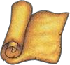
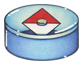
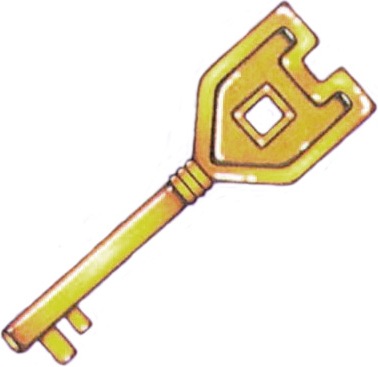
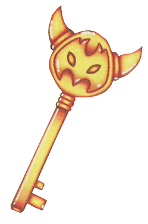
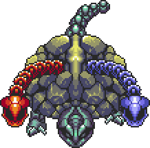
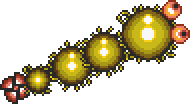
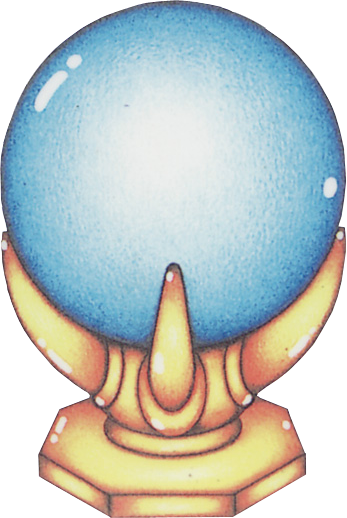

03 地下城设计
核心问题
ALttP 的 13 个地下城如何在 SNES 约 1MB 的卡带容量限制下实现主题差异化与难度递进？每个地下城的路径结构、核心谜题和 Boss 战如何构成一个自洽的"教学→应用→精通"三段式体验？
机制描述
地下城全景数据
ALttP 共 13 个地下城（不含 GBA 版追加内容），分布在 Light World 和 Dark World 两个阶段：
| 序号 | 地下城 | 所在世界 | 楼层数 | 核心物品 | Boss | 收集目标 |
|---|---|---|---|---|---|---|
| 1 | Hyrule Castle | Light | ~2 | 无（序章） | 无 | 救出 Zelda |
| 2 | Castle Dungeon | Light | ~2 | 无（逃脱） | 无 | 逃离水道 |
| 3 | Eastern Palace | Light | 2 | 弓 | Armos Knights ×6 | 勇气挂坠 |
| 4 | Desert Palace | Light | 2（+地下） | 魔法回旋镖 | Lanmolas ×3 | 力量挂坠 |
| 5 | Tower of Hera | Light | 5 | 无（月之珍珠在顶层） | Moldorm | 智慧挂坠 |
| 6 | Palace of Darkness | Dark | 4 | 魔法锤 | Helmasaur King | 第一位少女 |
| 7 | Swamp Palace | Dark | 2 | 钩爪 | Arrghus | 第二位少女 |
| 8 | Skull Woods | Dark | 3（散布式） | 火焰杖 | Mothula | 第三位少女 |
| 9 | Thieves' Town | Dark | 4 | 无（救出被囚禁的少女） | Blind the Thief | 第四位少女 |
| 10 | Ice Palace | Dark | 6 | 无 | Kholdstare | 第五位少女 |
| 11 | Misery Mire | Dark | 3 | 无 | Vitreous | 第六位少女 |
| 12 | Turtle Rock | Dark | 4 | 无 | Trinexx | 第七位少女 |
| 13 | Ganon's Tower | Dark | 多层 | 无 | Agahnim → Ganon | 终极 Boss |
GBA 版追加 Palace of the Four Sword，作为通关后的挑战地下城，不纳入本报告分析。
地下城标准元素
每个正式地下城（非序章）包含以下标准元素：
- 地图（Map）：显示已访问房间的布局。通常放在非关键路径上，奖励完整探索的玩家。
- 指南针（Compass）：标记 Boss 房间位置，有时还标记大宝箱位置。帮助玩家确定前进方向。
- 小钥匙（Small Key）：1-4 把不等，用于打开锁门。小钥匙可以在地下城内不同锁门间灵活使用，但不可跨地下城携带。
- 大钥匙（Big Key）：1 把，用于打开 Boss 房间和大宝箱。大钥匙的获取通常是地下城前半段的终点目标。
- 核心物品（Item）：多数地下城有一个独特物品，获得后立即在地下城内使用，同时解锁表世界的新区域。
- Boss：每个地下城末尾的挑战峰值，击倒后获得进度奖励（挂坠/少女解救）。




地下城的内部结构模式
ALttP 的地下城路径可以归纳为四种基本结构：
1. 线性走廊（Linear Corridor）
房間按顺序排列，几乎无分支。Eastern Palace 是最典型的例子——从入口到 Boss 的路径基本是直线，岔路只有少量通向宝箱的死胡同。适合教学型地下城。
2. 钥匙-锁链（Key Chain）
玩家沿一条主路径前进，但需要反复找到钥匙→开门→前进。每次开门揭示新区域，新区域中又有新钥匙。Desert Palace 属于这种结构，地下层的钥匙-锁配对构成推进主线。
3. 分支树（Branching Tree）
从中心区域向多个方向分叉，玩家需要逐条探索分支，收集各分支的钥匙/物品后才能继续前进。Swamp Palace 和 Palace of Darkness 有明显的分支结构。
4. 散布迷宫（Scattered Maze）
不使用标准的"一层一层"布局，而是多个小区域通过隐藏通道、传送点或特殊机关连接。 

地下城内"教学→应用→精通"的三阶段结构
以 Palace of Darkness（黑暗宫殿）为例，展示典型的三阶段设计：
阶段一：教学——安全环境下的新机制引入
获得魔法锤后，玩家在第一个房间遇到需要锤击的桩。房间内没有敌人威胁，玩家可以安全地实验锤子的功能：砸桩会改变地形（桩降下后可以走过去）。
阶段二：应用——在战斗压力下使用机制
后续房间中，锤击桩的操作开始出现在有敌人的环境中。玩家需要一边战斗一边寻找桩，或者在正确时机砸桩来改变战场布局。锤子的战斗用途也被引入——可以直接砸击敌人。
阶段三：精通——机制的组合与时间压力
Boss 战（Helmasaur King）是对锤子能力的终极测试。Boss 有一层坚硬的蓝色面具，必须用魔法锤反复敲击才能打碎。打碎面具后还需要继续用锤子（或剑）攻击本体。整个战斗的核心就是"锤子的精准应用"。
这个三阶段结构在几乎所有提供新物品的地下城中都有体现：
| 地下城 | 新物品 | 教学阶段 | 应用阶段 | 精通阶段 |
|---|---|---|---|---|
| Eastern Palace | 弓 | 无压力射击水晶开关 | 战斗中射击敌人 | 对 Armos Knights 的弱点射击 |
| Swamp Palace | 钩爪 | 跨越简单悬崖 | 战斗中拉取/眩晕 | 对 Arrghus 的眼珠逐一拉取击杀 |
| Skull Woods | 火焰杖 | 点燃远处火把 | 攻击远距离敌人 | 对 Mothula 的持续输出 |
| Tower of Hera | 无新物品 | 利用 Moldorm 战斗的空间感知 | 多层推石头解谜 | Boss 战中对 Moldorm 弱点的精准打击 |
Boss 设计的数据
每个 Boss 遵循"模式识别 + 反应测试"的设计框架：

| Boss | 攻击模式 | 弱点 | 识别的模式 | 反应测试 |
|---|---|---|---|---|
| Armos Knights ×6 | 跳跃压击，编队冲撞 | 弓箭射击（可被剑击倒但弓更有效） | 6个一组的行为模式变化 | 躲避落地范围 |
| Lanmolas ×3 | 从地下钻出，释放碎片弹 | 弓/剑攻击钻出瞬间 | 固定位置轮流出没 | 在碎片弹间隙找攻击窗口 |
| Moldorm | 快速移动，意图将玩家撞下平台 | 尾部 | 移动轨迹可预判 | 在平台边缘保持位置 |
| Helmasaur King | 冲撞、尾部横扫、火球 | 面具被锤子打碎后暴露的头部 | 攻击前的蓄力动作 | 躲避冲撞后接近攻击 |
| Arrghus | 大量眼珠围护本体 | 用钩爪逐一拉下眼珠并击杀 | 眼珠全部清除后本体暴露 | 处理本体反弹冲撞 |
| Mothula | 发射光束，房间内尖刺轨道移动 | 火焰杖/剑攻击本体 | 尖刺的移动模式 | 在尖刺和光束间找空间 |
| Blind the Thief | 四方向火球，头部分离攻击 | 头部分离时的本体 | 火球发射节奏 | 走位到正确位置输出 |
| Kholdstare | 冰块包裹，释放冰追踪弹 | 破冰（火焰杖/炸弹）后攻击内核 | 冰弹追踪模式 | 破冰窗口的利用 |
| Vitreous | 大眼释放小眼攻击，闪电 | 击落小眼后攻击本体 | 闪电的前兆 | 躲闪闪电后反击 |
| Trinexx | 三头龙（火头/冰头/石头），交替攻击 | 先用反属性杖击晕火/冰头，再打石头头 | 元素头的属性对应 | 切换道具的时机 |
| Agahnim | 三个幻影，反弹魔法球 | 用剑反弹魔法球 | 幻影真假的识别 | 反弹的时机把握 |
| Ganon | 冲刺+火蝙蝠+地裂，三阶段循环 | 丢脸后用剑攻击，光照时用银箭 | 三阶段的循环节奏 | 多阶段的持续反应 |
Ganon's Tower 的复战设计
Ganon's Tower 内部复现了 Light World 的三个 Boss——Armos Knights、Lanmolas 和 Moldorm。这是 ALttP 中唯一重复使用 Boss 的地下城。
设计效果：
- 唤起玩家对 Light World 的回忆，制造叙事上的首尾呼应感
- 用大幅增强的数值（更高血量、更快速度）测试玩家是否真正掌握了应对策略
- 在最终决战前提供能力自检——如果仍然无法轻松应对升级版 Light World Boss，说明玩家尚未准备好面对 Ganon
设计分析
1. 主题差异化：如何在极限容量下制造多样性
13 个地下城在 SNES 约 1MB 的卡带中实现主题差异化，核心策略是复用结构骨架，替换表层表现：
可复用的底层结构（不占额外容量）：
- 房间模板：矩形房间、走廊、楼梯间、大房间等基础几何
- 通用机关：锁门、开关、传送点、可炸墙壁
- 敌人 AI 基础行为：巡逻、追踪、射击
差异化的表层元素（每城独有）：
- 瓷砖集（Tileset）：每个地下城有独特的视觉主题——砖墙材质、地板纹理、装饰物
- 主题机关：Eastern Palace 的眼球开关、Swamp Palace 的水位控制、Ice Palace 的滑冰地面、Skull Woods 的多入口结构
- 环境颜色：Palace of Darkness 的暗色系、Desert Palace 的沙黄色、Ice Palace 的蓝色
这种"底层复用 + 表层替换"的策略是容量限制下的最优解 推测。如果每个地下城都要从零设计全新的底层逻辑，13 个地下城根本装不进 1MB。但如果只用一套通用房间模板而没有任何差异化，玩家会在第 5 个地下城时感到严重的重复疲劳。
主题差异化的具体表现：
| 地下城 | 主题 | 视觉标志 | 独特机关/机制 |
|---|---|---|---|
| Eastern Palace | 古代遗迹 | 砖石拱门、雕像 | 眼球开关（射击触发） |
| Desert Palace | 沙漠地宫 | 沙色砖块、仙人掌 | 引导蚁狮（沙漠中的流沙陷阱） |
| Tower of Hera | 高塔 | 砖石螺旋、星空 | 星形开关、多层垂直结构 |
| Palace of Darkness | 黑暗宫殿 | 暗色砖块、蜡烛 | 锤击桩、暗室 |
| Swamp Palace | 沼泽 | 水色地板、水草 | 水位控制（排水/蓄水改变可达区域） |
| Skull Woods | 骷髅森林 | 骨头装饰、暗绿 | 多入口散布结构、火把谜题 |
| Thieves' Town | 盗贼城镇 | 木质结构、牢房 | 可移动的假墙、NPC 互动（Blind 伪装） |
| Ice Palace | 冰之宫殿 | 冰蓝地板、冰块 | 滑冰物理、冰块推谜 |
| Misery Mire | 苦难沼泽 | 紫色毒雾、泥沼 | 传送点网络、视觉干扰 |
| Turtle Rock | 岩龟 | 岩石外壳、岩浆 | 三头元素机制、高压机关密度 |
最值得注意的设计是 Swamp Palace 的水位系统：地下城有上下两层，下层被水淹没无法通行。玩家需要在上层操作开关排水，使下层变为可通行状态。这本质上是用"状态的翻转"（有水/无水）让同一片空间产出两套不同的路径体验——用一份地图内容提供了两倍的有效探索空间。
2. 路径结构如何控制探索节奏
不同路径结构创造不同的心理体验：
线性走廊（Eastern Palace） 创造"向前推进"的动量。玩家不会被分支选择困扰，注意力完全集中在当前房间的挑战上。这适合教学——新手不需要在"往左还是往右"上耗费认知资源，可以把精力集中在学习弓的使用上。
钥匙-锁链（Desert Palace） 创造"层层剥开"的探索感。每找到一把钥匙就打开一扇门，每扇门后是一个全新的区域。这种结构让进度感非常明确——玩家能数出来"我已经开了几扇门"。
分支树（Swamp Palace） 创造"选择与返回"的节奏。玩家到达一个分支点，需要选择一条路走到底，然后回来走另一条。这种结构要求玩家形成对地下城布局的心理地图，增加了空间认知的参与度。
散布迷宫（Skull Woods） 创造最强烈的迷失感和探索感。玩家不仅在一个封闭空间内探索，还需要在表世界的森林中寻找不同的洞口入口。这打破了"地下城 = 封闭建筑"的固定预期。
这四种结构不是随机分配的，而是与流程阶段对应 推测：
- Light World 偏向线性/钥匙-锁链（新手友好）
- Dark World 前期引入分支（玩家已有基础）
- Dark World 中后期引入散布和复杂结构（玩家已精通）
3. Boss 的"模式识别 + 反应测试"设计哲学
ALttP 的每个 Boss 都可以拆解为两个层次的设计：
层次一：模式识别——"看懂 Boss 在做什么"
每个 Boss 都有可被学习的攻击模式。Armos Knights 会先编队巡逻再集体冲撞；Moldorm 有固定的移动轨迹模式；Trinexx 的三个头有固定的攻击轮替节奏。
模式识别是认知层面的挑战。首次面对 Boss 时，玩家的首要任务不是"打倒它"而是"理解它"。观察 Boss 的行为，找出规律，识别弱点——这是模式识别阶段。
层次二：反应测试——"在理解的基础上精准执行"
识别出模式后，玩家需要在正确的时间窗口内执行正确的操作。Moldorm 战斗中，知道"尾部是弱点"只是第一步，在实际战斗中精准地走到 Moldorm 尾部并挥剑还需要操作能力。
反应测试是技能层面的挑战。同一模式的不同 Boss 可能对反应有不同要求——Armos Knights 的反应窗口较宽（适合教学），Mothula 的反应窗口较窄（需要精确走位）。
两个层次的递进关系：
Boss 学习循环：玩家通过反复试错掌握 Boss 模式，最终击倒
这个过程大约需要 2-5 次尝试（新手可能更多），每次约 1-3 分钟。总时长约 5-15 分钟，这是一个非常适合的 Boss 学习曲线——短到不会让玩家放弃，长到胜利时有真正的成就感。
Ganon's Tower 复战的设计意图：
复战不是简单的重复。Light World Boss 在 Ganon's Tower 中拥有更高的血量和更快的速度，但行为模式相同。这意味着：
- 模式识别阶段被跳过（玩家已经认识这些 Boss）
- 反应测试阶段被强化（更高的执行精度要求）
这创造了一种"能力成长"的确认感——"同样的敌人，以前我觉得很难，现在我轻松应对"。
4. 难度递进的实现方式
Light World：教学 + 基础建立
| 地下城 | 设计角色 | 难度锚点 |
|---|---|---|
| Hyrule Castle | 纯教学 | 无 Boss，教基本操作 |
| Castle Dungeon | 教学（逃脱场景） | 无 Boss，引入水道/暗室概念 |
| Eastern Palace | 第一个正式地下城 | 简单线性结构，弓的教学 |
| Desert Palace | 第二个正式地下城 | 引入地下层概念，小钥匙管理 |
| Tower of Hera | Light World 终点 | 多层垂直结构，Moldorm 引入平台战斗 |
Light World 的 5 个地下城的功能主要是"教会玩家地下城的基本语言"——什么是小钥匙，什么是大钥匙，为什么需要地图和指南针，Boss 有可被学习的模式。
Dark World：逐步升级
| 地下城 | 新增的难度维度 |
|---|---|
| Palace of Darkness | 暗室视野限制，锤击桩机制 |
| Swamp Palace | 水位控制的状态翻转，钩爪的多目标应用 |
| Skull Woods | 散布式布局打破空间认知惯性 |
| Thieves' Town | NPC 欺骗（Blind 伪装），假墙 |
| Ice Palace | 滑冰物理，6层复杂垂直结构，大量钥匙管理 |
| Misery Mire | 传送点迷宫，视觉干扰，远程攻击敌人密度 |
| Turtle Rock | 三元素机制联动，最高密度的机关陷阱 |
| Ganon's Tower | 综合考验，多阶段 Boss，最长路径 |
Dark World 的难度递进不是简单地"更多敌人、更高伤害"，而是每个地下城引入一个新的维度的挑战。Ice Palace 的难度不在于敌人强，而在于空间结构复杂——6 层垂直布局中，玩家需要在楼层间搬运钥匙，一次错误的选择可能导致回到起点重新开始。
5. 物品在地下城内外的双重功能
地下城核心物品的设计遵循一个统一的模式：
物品四用链条：每个核心物品在获得后贯穿四个阶段，实现一物多用
以钩爪（Hookshot）为例：
- 在 Swamp Palace 内获得
- 在 Swamp Palace 内立即用于跨越水面的悬崖（教学）
- 在 Boss Arrghus 战中用于拉取眼珠（精通）
- 在表世界中用于跨越各种悬崖，到达之前无法到达的区域（解锁）
- 在后续几乎所有地下城中都有钩爪谜题（基础能力）
这种"一物四用"的设计使得每个物品都物超所值。玩家永远觉得"这个物品还有新用途"。

设计过程推导
13 个地下城的数量决策
为什么是 13 个而不是更少或更多？从约束和目标反推 推测：
约束：
- SNES 卡带约 1MB，需要容纳双世界地图 + 13 个地下城 + 敌人/物品/Boss 数据 + 音频 + 代码
- 游戏目标时长约 15-20 小时
- Light World 的收集目标是 3 个挂坠，Dark World 是 7 位少女
推导：
- Light World 3 个正式地下城对应 3 个挂坠（加上 2 个教学关 = 5 个）
- Dark World 7 个地下城对应 7 位少女（加上 Ganon's Tower = 8 个）
- 每个地下城约 30-60 分钟 → 13 × 45 分钟 ≈ 10 小时地下城内容，加上表世界探索，总时长约 15 小时
- 13 个地下城 × 约 20-30 个房间 ≈ 260-390 个房间数据，加上复用的瓷砖集和代码，在容量上刚好可行
数字 3 和 7 不是随意选择——3 对应三角神力的三个部分（力量、智慧、勇气），7 对应七贤者。叙事需求决定了收集目标的数量，收集目标决定了地下城数量。
Boss 设计的推导路径
从初代塞尔达到 ALttP 的 Boss 设计进化 推测：
初代塞尔达的问题： Boss 主要依赖"躲避弹幕 + 找时机攻击"，策略深度有限。部分 Boss 可以用纯反应力通过，不需要"理解"Boss。
ALttP 的改进方向：
- 需要让 Boss 更有"学习感"——玩家应该觉得"我变强了"而不是"我运气好"
- 在 2D 俯视角下，Boss 战的空间意识比 3D 或横版更难制造紧张感（玩家可以看到整个战场）
- Boss 需要体现地下城主题，而不仅仅是"更强的怪物"
→ 解决方案：让每个 Boss 的弱点与地下城的核心机制对应。
- Eastern Palace 的核心机制是"弓"→ Boss 弱弓
- Swamp Palace 的核心机制是"钩爪"→ Boss 弱钩爪
- Skull Woods 的核心机制是"火焰杖"→ Boss 弱火焰
这种对应让 Boss 战变成地下城教学链的自然终点，而非孤立的反应力测试。
"教学→应用→精通"三段式的发现
这个结构很可能是从教学设计的常识中推导出来的 推测：
- 如果直接在有敌人的房间里给新物品，玩家可能在没理解物品功能时就被打断
- 如果把教学放在无压力环境中但从不升级到有压力环境，物品会感觉"只会开开关，很无聊"
- 如果跳过教学直接让玩家用新物品打 Boss，挫败感极高
→ 自然推导出的顺序是：先安全教学 → 再压力下应用 → 最后 Boss 战精通测试。
反事实推演
假设一：如果所有地下城都使用线性走廊结构
后果：
- 每个地下城的体验同质化——"进门→走直线→打 Boss"的循环重复 13 次
- 地图和指南针失去功能——线性结构不需要导航工具
- 小钥匙退化为"走到门前发现锁了→回头找钥匙"的烦人机制，而非有意义的空间决策
- 玩家无法形成"探索地下城"的体验，感觉像在玩一串线性关卡
→ 结论：路径结构的多样化是地下城差异化的核心支柱之一。移除结构多样性后，即使视觉主题不同，体验仍然会趋同。
假设二：如果地下城物品不与 Boss 弱点对应
后果：
- Boss 战退化为纯粹的"躲避+砍"模式识别测试，失去了"学以致用"的满足感
- 新物品在获得后只在解谜环节使用一次就被遗忘，物品的价值感大幅降低
- 玩家可能用初始武器（剑）直接打 Boss，新物品变成纯粹的"开路工具"
- 地下城内部的教学链断裂——教学→应用→精通变成了教学→应用→（精通用的是别的东西）
→ 结论：物品- Boss 弱点的对应关系是地下城内部教学链闭环的关键。没有这个闭环，每个地下城的叙事弧线就不完整。
假设三：如果去掉 Ganon's Tower 中的 Light World Boss 复战
后果：
- Ganon's Tower 作为终极地下城的"总结感"减弱——缺少了对 Light World 经历的回顾
- 终极地下城纯粹由新内容组成，对老玩家而言没有情感锚点
- 不存在"能力成长确认"的环节——玩家无法在安全的对比中感受到自己的进步
- 需要设计 3 个新 Boss 来填充空间，增加开发成本
→ 结论：Boss 复战是用最小内容增量实现最大情感效果的设计手法。它不是偷懒的重复利用，而是一个有明确设计意图的叙事和体验策略。
假设四：如果每个地下城都提供新物品
ALttP 中 Dark World 的部分地下城（Thieves' Town、Ice Palace、Misery Mire、Turtle Rock）不提供新物品。 后果（如果强制每个地下城都给新物品）：
- 物品数量从约 15 种膨胀到约 20+ 种，但 SNES 手柄只有 6 个可用按键，无法承载如此多的物品切换
- 物品的"一物多用"价值被稀释——如果物品太多了，单个物品就不需要多用途
- 玩家的认知负荷过高——13 个地下城意味着学习 13 个新物品的使用方法
- 部分物品会沦为"只为一个地下城服务"的一次性道具
→ 结论：不是每个地下城都需要新物品。"有物品的地下城"和"无物品的地下城"的交替本身就是节奏——获得新物品的兴奋感和纯粹挑战的紧张感交替出现。
可迁移经验
为一个新机制设计教学时，使用"安全教学→压力应用→精通测试"的三阶段结构：
- 安全教学：无敌人、无时间压力的环境中首次使用新机制。玩家可以反复尝试而不受惩罚。
- 压力应用：在有敌人或时间压力的环境中使用同一机制。玩家的注意力被分散，需要同时处理多个任务。
- 精通测试：通常是一个阶段性挑战（Boss 或关卡末尾的大型谜题），综合测试对机制的掌握程度。
这个结构的要义在于：每次升级只增加一个新变量。 从教学到应用，增加的变量是"环境压力"。从应用到精通，增加的变量是"综合度"。绝不要在同一个阶段同时增加多个变量。
当需要大量关卡但内容预算有限时，不要试图让每个关卡从底层到表层都不同。而是：
- 建立一套通用的底层系统（房间类型、门锁机制、敌人 AI 基础行为）
- 每个关卡只替换表层元素（视觉主题、独特机关、环境规则）
- 让独特机关成为每个关卡的"身份标识"——玩家提到这个关卡时想到的第一件事
Swamp Palace = 水位控制，Ice Palace = 滑冰物理，Skull Woods = 散布结构。每个地下城有一个"签名机关"。
地下城内获得的核心物品应该就是对付该地下城 Boss 的关键道具。这确保了：
- 物品获得后不会被遗忘（立即在最高强度的挑战中使用）
- Boss 战有策略深度（不只是"躲避+砍"，而是"用特定工具利用弱点"）
- 教学链自然闭合（新物品的教学→应用→精通在同一个地下城内完成）
不要用"更多敌人、更高伤害"来提升难度。而是为每个后续关卡引入一个新的挑战维度：
- 视野限制（Palace of Darkness 的暗室）
- 状态翻转（Swamp Palace 的水位变化）
- 空间认知打破（Skull Woods 的散布布局）
- 物理规则改变（Ice Palace 的滑冰）
- 传送网络（Misery Mire 的传送点迷宫）
- 多元素联动（Turtle Rock 的三元素机制）
每个新维度都需要玩家学习新的应对策略，而不仅仅是"把之前做的事做得更好"。这种递进让玩家感觉每个关卡都在教授新的"语言"。
在游戏的后期阶段复用早期 Boss（但增强数值），可以实现：
- 零教学成本的能力自检——玩家已经知道 Boss 的模式
- "我成长了"的情感确认——同样的模式，以前觉得难，现在轻松应对
- 叙事上的首尾呼应——唤起对早期经历的回忆
- 开发成本的节省——复用 AI 和动画，只调数值
Skull Woods 的多入口散布结构证明：地下城不一定要是一个封闭的建筑。允许玩家在地下城内部和表世界之间反复进出，可以：
- 打破空间疲劳感（不是一直在同一种走廊中行走）
- 创造"这个地下城与世界融为一体"的沉浸感
- 让表世界的探索和地下城的推进产生交织（在地下城中获得的线索帮助找到表世界的其他入口）
补充材料
补充材料
对比参考
- NES 初代塞尔达：9 个地下城，无主题瓷砖集差异（全部使用相同的视觉风格），无物品- Boss 对应关系，Boss 策略深度较低。ALttP 在每个维度上都做了质的提升。
- Ocarina of Time：8 个地下城，从 2D 俯视角变为 3D 空间。"教学→应用→精通"的三段式被完整继承，但 3D 空间使得每个房间的设计复杂度大幅增加。因此只能做 8 个地下城（相比 ALttP 的 13 个），每个更精致但总量减少。
- A Link Between Worlds（2013）：直接致敬 ALttP 的双世界设计，大部分地下城在同样的地理位置。关键区别在于"租借物品"系统——玩家可以在早期租到大部分物品，从而允许更高自由度的地下城攻略顺序。这本质上是把 ALttP 的"物品驱动进度"软化为"推荐但非强制"。
- Dark Souls：整个游戏世界本质上就是一个巨大的、无加载画面的地下城。ALttP 的"钥匙-锁链"结构和"教学→精通"节奏在 Dark Souls 的区域设计中有明显回响。
数据来源
- 地下城布局与 Boss 数据参考：[Zelda Wiki - ALttP Dungeons](https://zeldawiki.wiki/wiki/The_Legend_of_Zelda:_A_Link_to_the_Past)
- SNES 卡带容量：约 1MB（8Mbit），这在当时属于大容量卡带
- 房间数量为估算值，基于各地下城地图分析